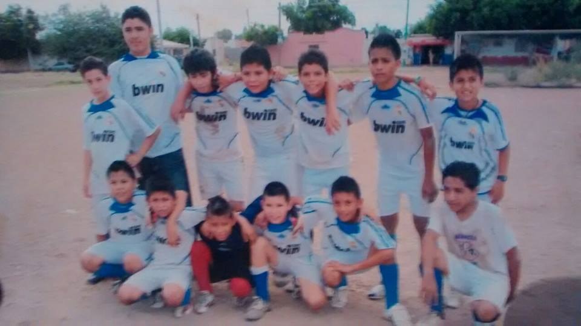

PRIMARIA |
|
historia de la primaria
Inicio
|
Antes de los 5 años no pasó nada interesante ni cosas que yo recuerde mucho así que empezaremos con mis años en la primaria, yo estudiaba en la escuela Benito Juárez de la Colonia Estrella, hay conocí a un gran amigo llamado Gael, con el pasaba todo el día en la escuela y a veces después de la escuela, lo que más me gustaba de ir a su casa es que podíamos estar todo el día jugando N64 y no nos íbamos a aburrir, pero al terminar el segundo año yo me mude al Fraccionamiento Nuevo Horizonte y comencé de nuevo, nuevas amistades y nueva escuela, pero para mí ese cambio fue lo mejor porque conocí a mi actual mejor amigo Alexis Verdugo con el fue diferente porque nos la pasábamos afuera jugando con el balón, a los dos nos apasionaba los mismo, el futbol, aunque no éramos tan buenos para jugarlo nos gustaba hacerlo después de salir de la escuela a las 5 de la tarde, pero llego un momento en el que yo entre en un equipo para jugar, era futbol uruguayo, me invito un amigo del salón, pero lo malo es que yo solo iba a ver los partidos, porque nunca me metían, lo bueno fue que mi hermano mayor Sergio iba de vez en cuando a ver los partidos y se dio cuenta de eso, en esa misma semana el hablo con varios amigos que teníamos que jugaban futbol para hacer un equipo y meterlo en ese torneo, mi hermano comenzó a juntar jugadores, conseguir patrocinador para los uniformes y poco a poco se fue metiendo más en el rollo de tener un equipo solamente porque no me metían a jugar, después de la siguiente semana que armo el equipo tuvimos nuestro primer partido, que no fue de los mejor porque perdimos 5-2 contra un equipo llamado Doneros y después de eso mi hermano comenzó a ir a ver jugadores y jalarlos con nosotros, al pasar el tiempo mi hermano decidió hacer sesiones de entrenamiento 3 días a la semana, las cosas fueron mejorando, ya hasta ganábamos juegos y lo raro es que quedamos en segundo lugar del torneo y la final la jugamos contra el mismo equipo que nos metió 5 goles en la ronda normal, el partido estaba muy cerrado, cuando el árbitro agrego 3 minutos al juego nosotros íbamos ganando 5-3, pero una mala salida de un defensa y un grandísimo gol de chilena de uno de los contrincantes nos ponía 5-5 el finalizar el tiempo normal, nos fuimos al agregado y nosotros estábamos muy entusiasmados para salir porque sabíamos que podíamos ganar el juego, al final ganamos 7-5 y así fue como quede campeón en el torneo de mi barrio, empeze con un equipo en el cual nisiquiera jugaba pero termine campeón con mucho esfuerzo y dedicación de mi hermano mayor.
|  |
|